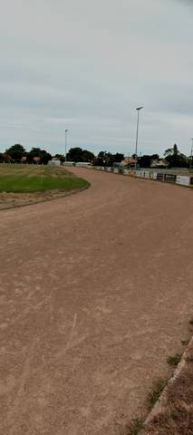
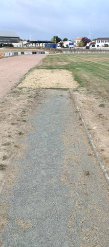
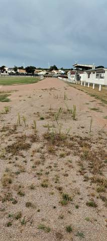
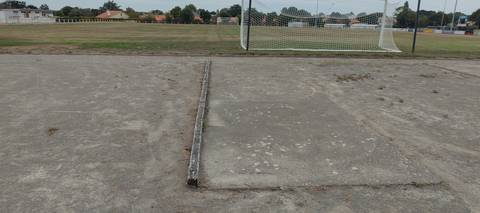

{kind=link}
{kind=link}
{kind=link}
{kind=link}
Une très vieille piste en cendrée de 400 m, avec de longues lignes droites pour le 100 m et le 110 m haies, un sautoir en longueur et une aire de lancer du poids. Mais l'athlétisme a quitté ce stade depuis longtemps : plus une seule ligne de couloir sur l'anneau, des chardons en pleine ligne droite, le sable du bac de saut envahi d'herbe, le cercle de lancer à peine lisible sur sa dalle fissurée. Ce qui reste entretenu, c'est le terrain de football au centre ; l'anneau sert surtout de chemin autour. Pour un footing ou du fractionné sans exigence de chrono, ça tient encore, et la cendrée est douce aux jambes ; pour du travail de vitesse, de haies ou de concours, il n'y a plus rien. Portail ouvert, accès libre le jour de la visite.
Complexe Sportif du Parc du Grand Fay
Rue du Grand Fay, 44320 Saint-Père-en-Retz · Loire-Atlantique
Complexe Sportif du Parc du Grand Fay is an athletics venue in Saint-Père-en-Retz (Loire-Atlantique), Pays de la Loire, France. It has a 400 m cinder / gravel running track. It also offers long jump pit and shot put. The venue provides changing rooms and showers. Access is free and unrestricted.
Photos




A photo is surely still missing
Jump pits and throwing areas are what public data describes worst, and what gets photographed least. A close-up of the ground, a covered vault pit, a sand box gone to weeds: each adds what no field carries.
Send a photoNo GitHub account?Track
- Surface
- Cinder / gravel
- Lap length
- 400 m
- Track type
- Athletics stadium oval
- Setting
- Outdoor
- Opened
- 1994
Recorded facilities
- Long jump pit
- Shot put
Access & amenities
- Free access
- Yes
- Floodlighting
- No
- Changing rooms
- Yes
- Showers
- Yes
- Toilets
- Yes
- Stand
- 289 seats
Athlete reviews
Visite sur place le 23 août 2026. Revêtement confirmé au sol : cendrée, sur tout l'anneau — pas d'enrobé ni de synthétique. Aucune ligne de couloir n'est tracée nulle part sur la piste : le marquage a entièrement disparu, on ne devine ni corde ni séparations, et le champ « couloirs » reste donc vide plutôt que renseigné à une valeur inventée. Le développement de 400 m déclaré au recensement a été retrouvé sur un tour à la montre GPS le jour de la visite ; ce n'est pas une mesure au décamètre en couloir 1, mais aucune raison ne conduit à mettre le chiffre en doute. La longue ligne droite, qui permettait le 100 m et le 110 m haies, est envahie de chardons et de touffes d'herbe sur une bonne partie de sa largeur. Le sautoir en longueur est en place : couloir d'élan en enrobé très délavé, bac de sable dont le sable est sec, tassé et colonisé par la végétation ; la planche d'appel n'a pas été identifiée. L'aire de lancer du poids est une dalle de béton fissurée, dont le cercle ne se lit plus qu'en devinant. Aucun sautoir en hauteur, aucun sautoir à la perche, aucune cage de lancer du disque ou du marteau, aucun couloir de javelot repérés le jour de la visite. Les agrès listés ici sont donc ceux vus, y compris hors d'usage : un agrès dégradé reste un agrès, son état est décrit ici et non traduit en booléen. Le terrain de football central est, lui, tondu et entretenu — c'est l'usage vivant du site. Tribune couverte le long de la ligne droite (289 places au recensement). Deux divergences avec le recensement méritent d'être dites. Le recensement déclare l'équipement en accès non libre : le 23 août 2026, le portail était ouvert et on entre sans rien franchir, d'où l'accès libre retenu ici — une déclaration ancienne ne vaut pas contre une visite, mais rien ne garantit que le portail soit ouvert tous les jours. Le recensement déclare aussi l'équipement sans éclairage, et la fiche l'affiche donc ainsi : des mâts sont pourtant en place autour du terrain, visibles sur les photos ; ils n'ont pas été vus allumés et rien ne dit qu'ils éclairent l'anneau plutôt que le seul terrain de football, ce qui laisse la déclaration debout jusqu'à vérification. Ce que dit la mairie. Site officiel relevé par l'annuaire de l'administration (DILA) : www.saintpereenretz.fr. Dix-huit actes y ont été lus le 24 août 2026, pour des séances échelonnées du 26 janvier au 29 juin 2026 ; cinq d'entre eux, publiés en PDF scanné sans couche texte, ont été océrisés pour être lus. Aucune délibération ne porte sur la piste, sur sa réfection ou sur des travaux d'athlétisme. Les seules décisions touchant aux équipements sportifs sur cette période sont deux conventions d'utilisation des équipements sportifs communaux, l'une avec le LEAP Saint-Gabriel Nantes Océan, l'autre avec la MFR, approuvées à l'unanimité le 29 juin 2026 (délibérations 2026/8.1.5/051 et 2026/8.1.5/052) ; le document publié ne précise pas quels équipements sont concernés, et rien ne permet d'en déduire que la piste est comprise. Les actes du 28 mai 2026, d'abord signalés comme illisibles faute de couche texte, ont depuis été lus : ce ne sont pas ceux du conseil municipal mais ceux du conseil d'administration du CCAS, et leurs trois délibérations portent sur l'élection du vice-président, celle du vice-président délégué et la désignation d'un représentant à l'UDCCAS. Rien qui concerne un équipement sportif. Un homonyme mérite d'être écarté, parce qu'il apparaît dès qu'on cherche le nom du stade dans les délibérations : le conseil municipal du 26 janvier 2026 a voté à l'unanimité la désaffectation et le déclassement du camping du Grand Fay, puis sa cession à des particuliers (délibérations 2026/3.5.1/009 et 2026/3.2.1/010). Il s'agit du camping, et non du complexe sportif, qui partagent le nom du lieu-dit ; aucune de ces décisions ne touche à la piste. Aucun aménagement voté ne vient donc contredire l'état constaté sur place — mais une délibération non trouvée ne prouve pas qu'il n'y ait pas de projet.
Other venues in the department
- Complexe Sportif Maneyrol
- Complexe de la Viauderie
- Complexe sportif Joséphine Baker (Le Clion-sur-Mer)
- Centre Sportif du Val Saint Martin
- Stade Jean Vincent
- Gymnase Municipal J. Girard
Report an error or complete this record
Réf. I441870004 · Source: Data ES + community — Data ES, French ministry for sport, Licence Ouverte 2.0. Records are self-declared and may be incomplete: check access conditions before travelling.